Ubisoft NEXT 2024育碧 NEXT 2024
Level Design Competition Entry - Top 10 in Level Design关卡设计大赛参赛作品 - 关卡设计 Top 10
Project Overview项目概览
During this project, I designed an FPS level incorporating stealth mechanics. The theme of the design competition was Verticality.在这个项目中，我设计了一张融合潜行机制的 FPS 关卡。大赛主题是垂直性（Verticality）。
In this level, I implemented a multi-layered structure. The player starts from the port, infiltrates the cargo ship to search for the missing agent, explores environmental storytelling, uncovers the secrets hidden on the cargo ship, and ultimately escapes from the top deck.关卡采用多层结构：玩家从港口出发，潜入货轮寻找失踪特工，通过环境叙事探索线索，揭开货轮上的秘密，最终从顶层甲板撤离。
A quick peek of the level design document if you are short on time:时间有限？先快速看一眼关卡设计文档：
This Journey Starts From Ideation旅程从构思开始
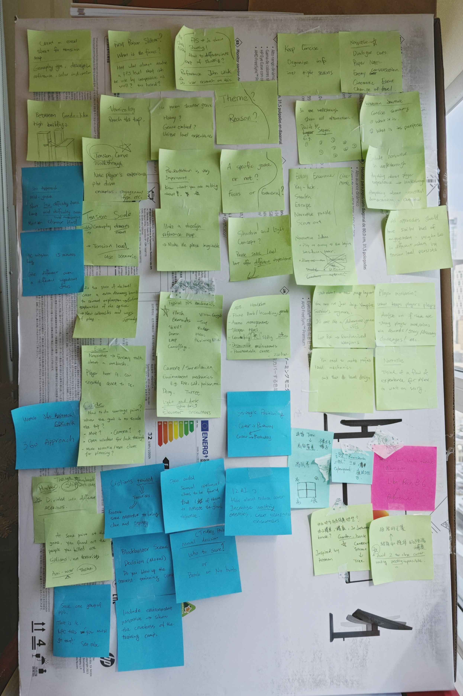
💡 Divergence Brainstorming💡 发散式头脑风暴
I applied a divergent mindset to generate a range of relevant ideas, which I documented on my idea board. By identifying connections between related ideas, I was able to develop my ideas to be more comprehensive, refined and creative.我用发散思维生成一系列相关想法，并记在灵感板上。通过找出想法之间的关联，我把构思打磨得更完整、更细致，也更有创意。
User Research用户研究
Player Quotes ➡️ Engagement Types玩家原话 ➡️ 参与类型
To better understand user needs, I reviewed two recent critiques of Call of Duty titles and extracted key quotes into engagement codes. These codes act as design insights and directions, ensuring that my work aligns with player expectations and desires.为更好理解用户需求，我阅读了两篇近期《使命召唤》相关评测，并把关键原话提炼成投入点。这些投入点作为设计洞见与方向，确保作品对齐玩家期望。
Player Quotes from Previous COD Games往期 COD 游戏的玩家原话
- " with communication to team members limited to radio chatter. As a result, there's zero sense of camaraderie"「与队友的沟通仅限于无线电闲聊。结果几乎没有战友情谊感。」
- "opting for a thin veil of openness and choice over Call of Duty's once-trademark blockbuster storytelling. It's a shame because you can see a scenario where these missions could've reached the heights of 2019's Lights Out."「用一层薄薄的开放与选择，取代了《使命召唤》曾经标志性的大片叙事。很可惜 - 你能想象这些任务本可以达到 2019 年 Lights Out 的高度。」
- "no matter how stealthily you approach the situation you're only really delaying the inevitable firefights against seemingly endlessly spawning enemies. And once you are spotted you'll have a near-impossible job trying to lose them."「无论你多潜行地接近局面，本质上只是在推迟与似乎无限刷出的敌人不可避免的交火。一旦被发现，想甩掉他们几乎不可能。」
- "these open combat missions, they all end up blending into a rinse-and-repeat experience I felt like I was playing over and over, just in different locations."「这些开放战斗任务最终都混成了一种重复刷洗的体验 - 感觉自己一遍遍在玩同一套流程，只是换了地点。」
Engagement Codes投入点
- Team member/NPC interaction队友 / NPC 互动
- Sense of camaraderie战友情谊感
- Blockbuster narrative大片级叙事
- Tactical stealth gameplay战术潜行玩法
- Mistake tolerance容错空间
- Avoid Obvious Repetition避免明显重复
- Various objective type多样目标类型
Mechanics Engagement Breakdown机制参与拆解
🔎 I created a table to break down the engagement type of each gameplay ingredient that is available in the competition.🔎 我做了一张表，拆解大赛可用的每一种玩法要素对应的参与类型。
This approach allowed me to understand gameplay ingredients from the players' perspective and helped me strategically incorporate these mechanics and craft dynamic gameplay experiences by thoughtfully using different engagement types throughout my level.这个方法让我从玩家视角理解玩法要素，也帮助我有策略地纳入这些机制，并在关卡中有意识地切换不同参与类型，做出更有变化的体验。


Level Beat Pacing Sheet关卡节拍节奏表
Click the image to view the full size点击图片查看大图

This level pacing sheet is to map out the pace and narrative flow of the level. 这张关卡节奏表用来梳理关卡的节奏与叙事推进。
Each beat is assigned a specific engagement type, paired with corresponding events and gameplay activities. I planned the beats, ensuring that various gameplay and environmental shifts interweave dynamically. This cohesive design approach helped me create a engaging level structure that keeps players continuously immersed.每个节拍都对应一种参与类型，并搭配相应事件与玩法活动。我规划节拍时，确保多样玩法与环境变化动态交织。这种整体设计方法帮助我做出能让玩家持续沉浸的关卡结构。
360 Approach360度探索设计方式

I adopted the 360 Approach for Open World Mission Design developed by Philippe Bergeron, Level Design Director at Ubisoft Montreal. 我采用了育碧蒙特利尔关卡设计总监 Philippe Bergeron 提出的开放世界任务「360度探索设计方式」。
This design approach allows players to approach the point of interest from various angles while ensuring a consistent experience for all players.这一设计方式让玩家可以从多个角度接近兴趣点，同时保证所有玩家获得一致体验。
Player Flow Chart玩家流程图
Click the image to view the full size点击图片查看大图


I created separate flowcharts for stealth and aggressor players to illustrate the intensity curve of their gameplay experience.我分别为潜行与强攻玩家做了流程图，用来呈现各自玩法体验的强度曲线。
The preparation done during the Beat Pacing Sheet phase really paid off. The game's difficulty rises and falls smoothly, creating a well-balanced and engaging level experience. I studied the three-act hero’s journey structure from film studies. Throughout the narrative, I gradually revealed the enemy’s conspiracy, using foreshadowing techniques to keep players hooked.
Some of the lores to foreshadowing the enemy's conspiracy ➡️
"Ooo, what could possibly go wrong on a cargo ship?"
节拍节奏表阶段的准备确实起了作用。难度起伏顺畅，关卡体验更平衡、更抓人。我参考了电影研究中的三幕式英雄之旅结构。叙事过程中，我逐步揭开敌方阴谋，并用伏笔手法持续钩住玩家。
用于暗示敌方阴谋的部分设定文案 ➡️
「哦，货轮上还能出什么岔子呢？」
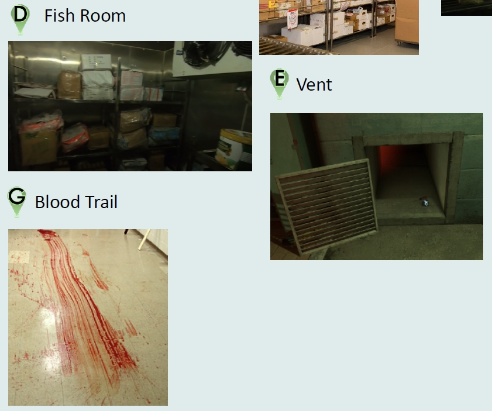
Level Design Document with the 2D layout 关卡设计文档与 2D 布局
- Mission Brief任务简报
- 2D Layout & Design Rationale2D 布局与设计论证
- Environment Reference环境参考
- Walk Through Map流程地图
- Stealth Approach潜行路线
- Aggressor Approach强攻路线
- Design Analysis设计分析
- 360 Approach360度探索设计方式
- Beat Pacing Sheet节拍节奏表
- Player Flow Chart玩家流程图
Document Index文档目录


When designing the 2D level layout, my primary considerations included: 设计 2D 关卡布局时，我的主要考量包括：
- ⏳ Flow and Pacing:
Shaping the level's tutorial, development, climax, and conclusion through progressive difficulty.⏳ 动线与节奏：
通过渐进难度塑造关卡的教学、发展、高潮与收尾。 - 🎡 Thematic Points of Interest:
Creating memorable landmarks with unique themes (e.g., a huge cargo ship) to aid player recall.🎡 主题兴趣点：
用独特主题打造难忘地标（例如巨型货轮），帮助玩家记忆。 - ↔️ Branching Paths:
Providing appropriate multiple path choices to enhance exploration and replayability, while carefully avoiding player confusion.↔️ 分支路径：
提供适度多路径选择，增强探索与重玩性，同时避免玩家迷路。 - 🎲 Gameplay Variety:
Preventing monotonous, repetitive gameplay by introducing diverse enemies, environmental challenges, puzzles, or narrative events to maintain freshness.🎲 玩法多样性：
通过多样敌人、环境挑战、解谜或叙事事件避免单调重复，保持新鲜感。 - 📜 Narrative Integrity:
Ensuring the story's complete arc by pre-scripting the overall narrative and structure.📜 叙事完整性：
预先脚本化整体叙事与结构，保证故事弧线完整。
Finally I moved into 3D Blockout最后进入 3D 白盒
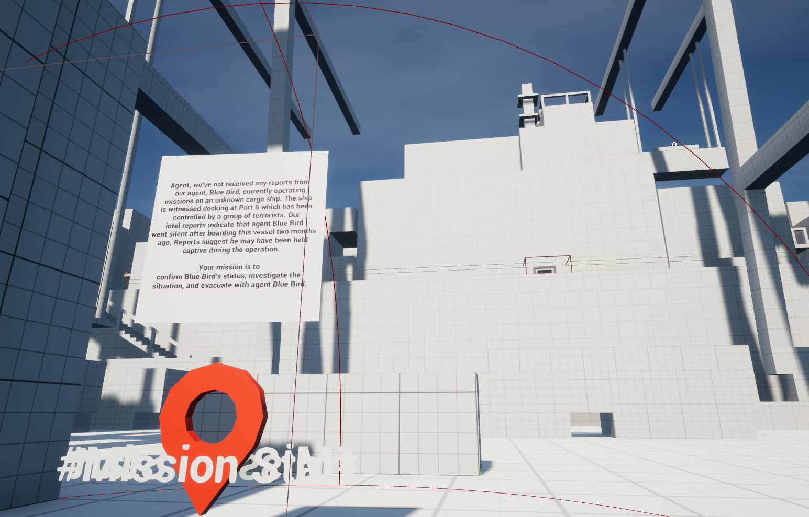
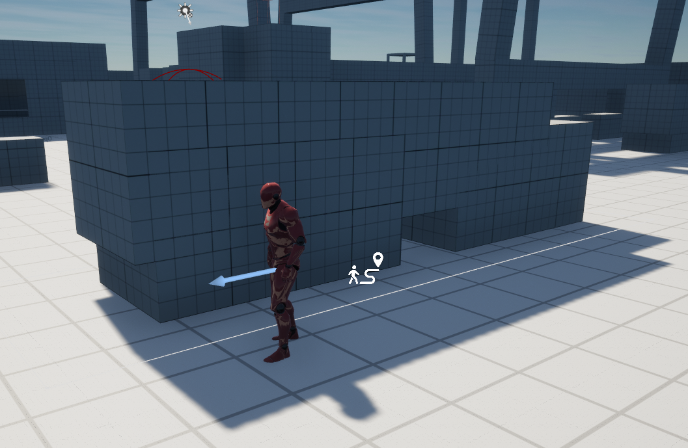
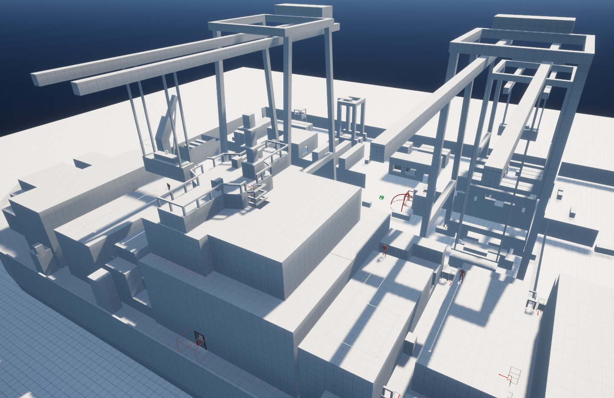
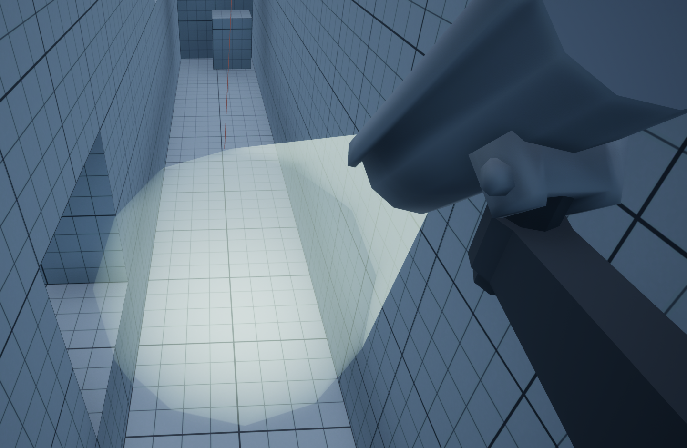
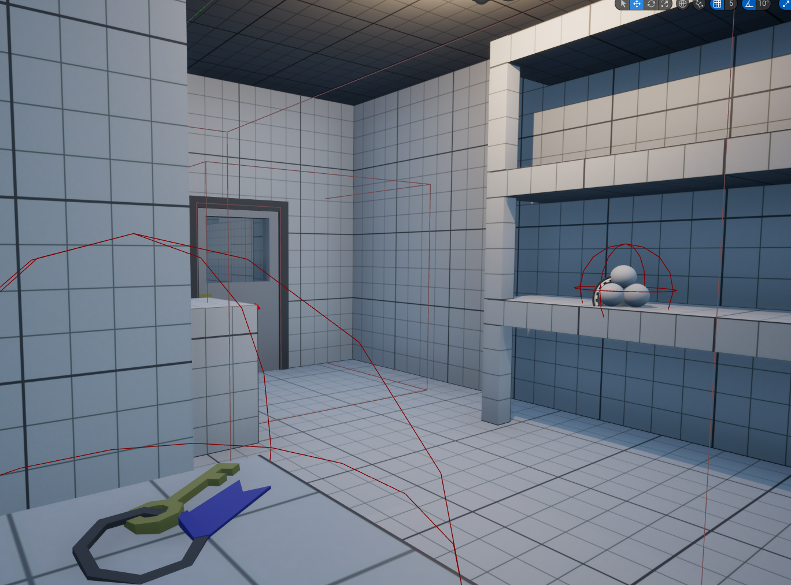
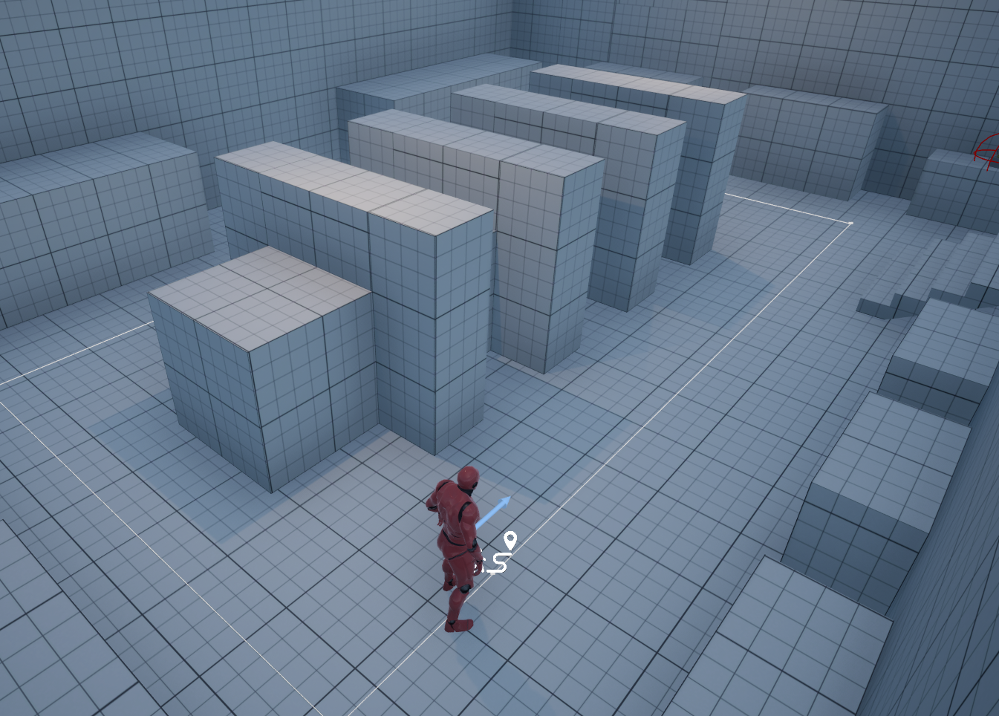
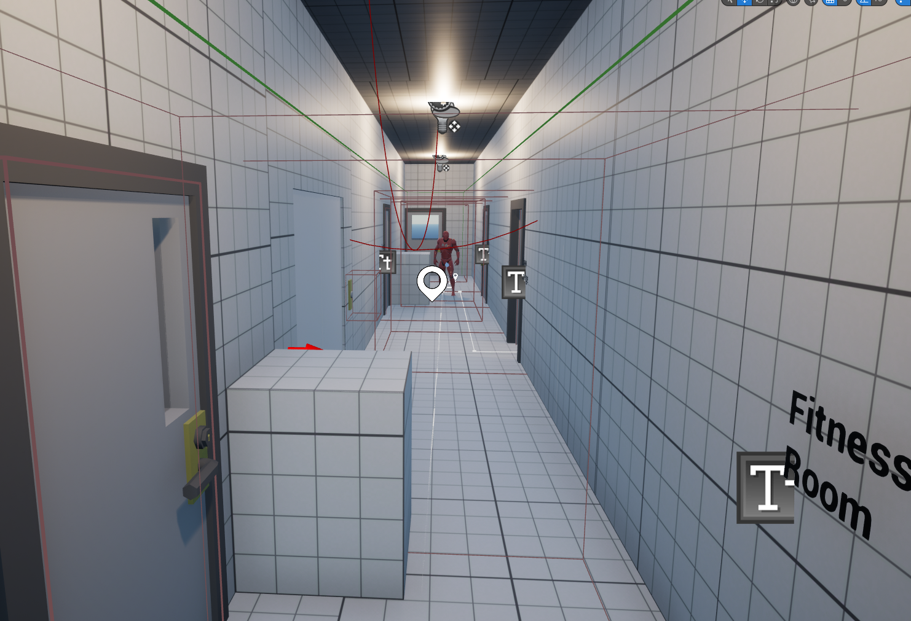
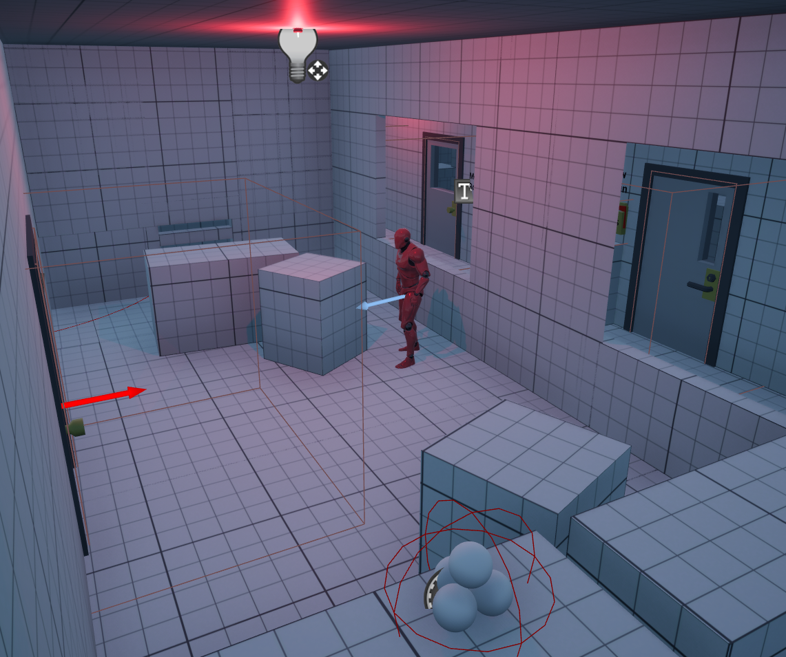
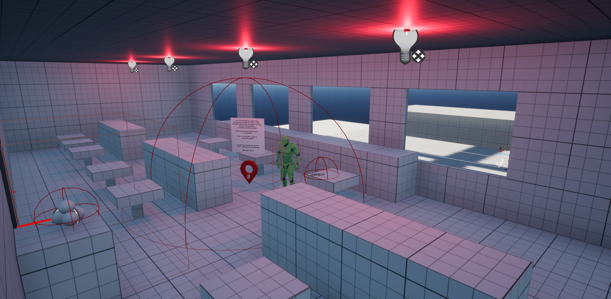
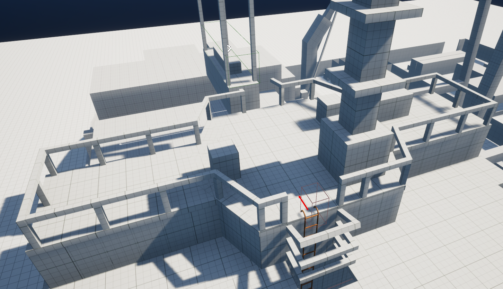
For the 3D blockout, my main focuses were: 3D 白盒阶段，我的主要关注点是：
- 🎯 Clear Objectives and Visual Guidance:
Maintaining clear and readable objectives through the strategic use of lighting, landmark placement, and environmental structures to guide the player's line of sight.🎯 清晰目标与视觉引导：
通过灯光、地标布置与环境结构引导视线，保持目标清晰可读。 - 🧱 Cover Placement:
Providing sufficient cover in combat areas and considering both player and AI lines of fire. 🧱 掩体布置：
在战斗区域提供充足掩体，并同时考虑玩家与 AI 的射击线。 - 🪜 Verticality and Elevation Changes:
Utilizing platforms, ramps, and stairs of varying heights to add spatial dimension and gameplay diversity. 🪜 垂直性与高度变化：
用不同高度的平台、坡道与楼梯增加空间层次和玩法多样性。 - 🕵️♂️ Environmental Storytelling:
Conveying narrative and supplementary background information through scene arrangement, object placement, and text collectibles. 🕵️♂️ 环境叙事：
通过场景布置、物件摆放与文本收集物传达叙事与补充背景。
Feedback from Ubisoft Judges育碧评委反馈
Pros:优点：
- 1. The overall layout is well-structured.1. 整体布局结构清晰。
- 2. The mission objective is clear and easy to follow.2. 任务目标清楚，容易跟随。
- 3. Effective use of notes and ally NPCs enhances the experience.3. 纸条与友方 NPC 运用得当，提升了体验。
- 4. Key and room placements are well thought out.4. 钥匙与房间布置考虑周到。
- 5. Ammo distribution is balanced and sufficient.5. 弹药分布均衡且充足。
Cons:不足：
- 1. Some areas of the level feel claustrophobic due to tight walkways.1. 部分区域走道过窄，显得压抑。
- 2. Certain placement issues resulted in gaps in the level, allowing the AI to detect the player unexpectedly.2. 某些摆放问题导致关卡出现缝隙，AI 会意外发现玩家。
- 3. These gaps also caused AI pathfinding issues, preventing them from reaching the player in some cases.3. 这些缝隙也造成 AI 寻路问题，有时无法抵达玩家。
- 4. The ending feels rushed, as the ladder leading to the next section is placed just outside the room.4. 结尾偏仓促 - 通往下一区域的梯子就放在房间外侧。
Lessons I learned and will put in future practice:我学到的、会带到未来实践中的教训：
- 1. I need to develop better spatial management skills to avoid overly narrow areas. 1. 我需要提升空间管理能力，避免区域过窄。
- 2. It's also crucial to align modular level elements more accurately to ensure proper AI functionality.2. 同样关键的是更精确地对齐模块化关卡元件，保证 AI 正常运作。
- 3. While I aimed for players to immediately understand their choices at the end, particularly favoring the rescue option, this led me to focus disproportionately on refining that specific experience. I neglected the other option, which taught me a vital lesson: in future projects, I must consider all player choices and ensure each provides meaningful gameplay.3. 我希望玩家在结尾立刻理解自己的选择，尤其偏向救援路线，结果过度打磨那一条体验，忽视了另一条。这让我学到关键一课：未来项目必须兼顾所有玩家选择，并保证每条路径都有有意义的玩法。